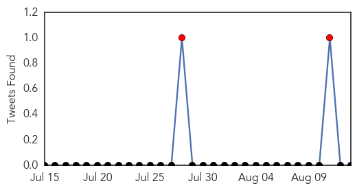

Meningitis
30-Day Web Trend
0 alerts, 0 warnings

30-Day Twitter Trend
2 alerts, 0 warnings

Article Locations

Article Confidences
Top Articles:
- 0.971
- Boy Was Not Killed by Brain-Eating Amoeba in Minnesota Lake, Officials Say
- 0.917
- Oklahoma resident dies from Naegleria infection, contracted amoeba in Lake Murray
- 0.901
- Family 'devastated' after 3-year-old dies from meningitis
- 0.898
- Swimmer dies after contracting brain-eating amoeba in Oklahoma lake
- 0.650
- Human health vulnerability to climate change in Ghana
- 0.576
- Mesa County Health Department is encouraging college students to get their vaccinations before school starts
- 0.576
- Asia is expected to show high growth rates by 2020
Top Tweets:
-
No tweets found for Aug 13, 2015
Bubonic Plague
30-Day Web Trend
0 alerts, 0 warnings

30-Day Twitter Trend
0 alerts, 0 warnings
Article Locations

Article Confidences

Top Articles:
-
No articles found for Aug 13, 2015
Top Tweets:
-
No tweets found for Aug 13, 2015